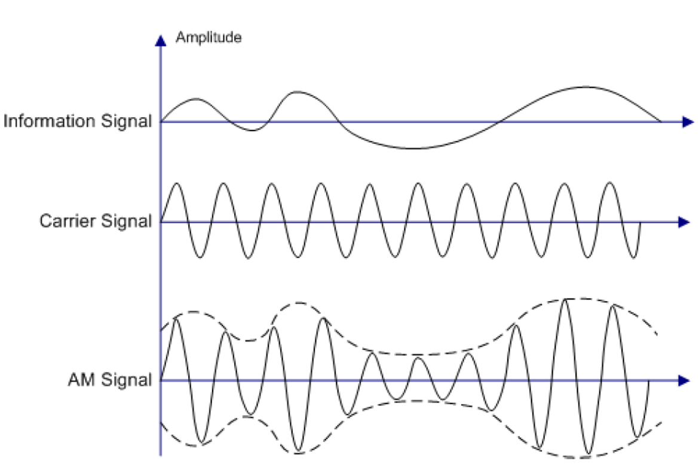
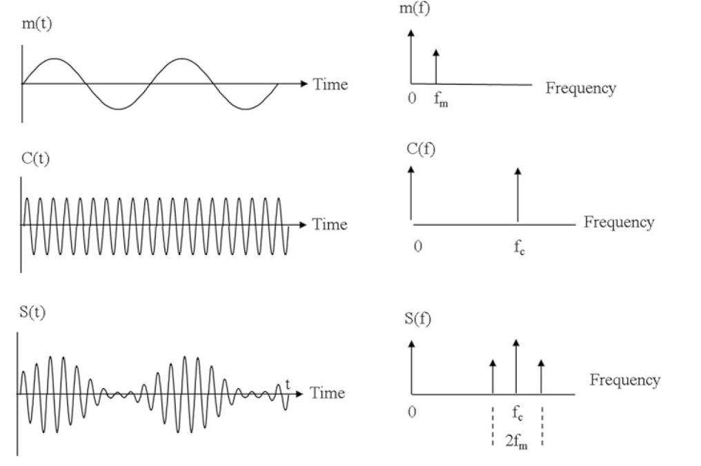

Introdução à Modulação e Demodulação
- arquivo pdf do projeto: Modulação AM
Modulação
A modulação é um processo utilzado em telecomunicações que permite a transmissão de sinais de informação (como voz ou dados) através de um meio de comunicação, utilizando uma onda portadora.
A onda portadora é uma onda de alta frequência que pode ser facilmente transmitida por meios como cabos, fibras ópticas ou ondas de rádio.
Ao modular esta portadora com o sinal de informação, conseguimos "carregar" a informação ao longo de distâncias maiores e com menor perda de qualidade.
Essa técnica é aplicada em áreas como processamento de sinais digitais, sistemas embarcados e redes de comunicação.
Exercício 1
As principais propriedades que podem ser modificadas são:
- Amplitude
- Frequência
- Fase
Este processo permite que o sinal de informação seja transmitido a distâncias maiores e com melhor eficiência.
Tipos de Modulação
Os principais tipos de modulação são:
Modulação Analógica
- Modulação em Amplitude (AM): Modifica a amplitude da portadora conforme o sinal de informação.
- Modulação em Frequência (FM): Altera a frequência da portadora de acordo com o sinal modulante.
- Modulação em Fase (PM): Ajusta a fase da portadora baseada no sinal de entrada.
Modulação Digital
- ASK (Amplitude Shift Keying): Varia a amplitude para representar bits.
- FSK (Frequency Shift Keying): Usa diferentes frequências para bits "0" e "1".
- PSK (Phase Shift Keying): Altera a fase para representar dados binários.
- QAM (Quadrature Amplitude Modulation): Combina amplitude e fase para transmitir mais bits por símbolo.
Exercício 2
Modulação AM (Amplitude Modulation)
A Modulação em Amplitude (AM) é uma técnica na qual a amplitude da onda portadora é variada de acordo com o sinal de informação que se deseja transmitir. Nesta modulação, a frequência e a fase da portadora permanecem constantes, enquanto sua amplitude reflete as variações do sinal de áudio ou outro tipo de informação.

Princípio de Funcionamento
A equação de um sinal AM é dada por:
$$ s(t) = [A_c + A_m \cos(2\pi f_m t)] \cos(2\pi f_c t) $$
Onde:
- ( s(t) ): Sinal modulado em amplitude.
- ( A_c ): Amplitude da portadora.
- ( A_m ): Amplitude do sinal modulante.
- ( f_c ): Frequência da portadora.
- ( f_m ): Frequência do sinal modulante.
Índice de Modulação
O índice de modulação (( m )) expressa a profundidade da modulação:
$$ m = \frac{A_m}{A_c} $$
- ( 0 \leq m \leq 1 ): Modulação normal.
- ( m > 1 ): Sobremodulação (causa distorção).
Espectro de Frequência
O espectro de um sinal AM consiste em:
- Frequência Portadora (( f_c ))
- Banda Lateral Superior (( f_c + f_m ))
- Banda Lateral Inferior (( f_c - f_m ))

Demodulação
A demodulação é o processo de recuperar o sinal original (informação) a partir do sinal modulado recebido.
Quando um sinal modulado é transmitido através de um meio, ele chega ao receptor ainda "carregado" na onda portadora. Para extrair a informação útil (como áudio ou dados), precisamos remover a portadora, deixando apenas o sinal original.
Exercício 3
Demodulação AM (Amplitude Modulation)
Em AM, o sinal modulado é uma portadora cuja amplitude varia de acordo com o sinal de informação. A demodulação AM visa extrair essas variações de amplitude, descartando a portadora de alta frequência.
Processo Geral:
- Recepção do Sinal Modulado: O sinal AM chega ao receptor através da antena.
- Filtragem Inicial: Um filtro passa-faixa seleciona a frequência desejada, atenuando sinais indesejados.
- Detecção da Envoltória: Extrai a amplitude (envoltória) do sinal modulado.
- Filtragem de Ruído: Um filtro passa-baixa remove componentes de alta frequência residuais.
- Amplificação: O sinal recuperado é amplificado para uso final.